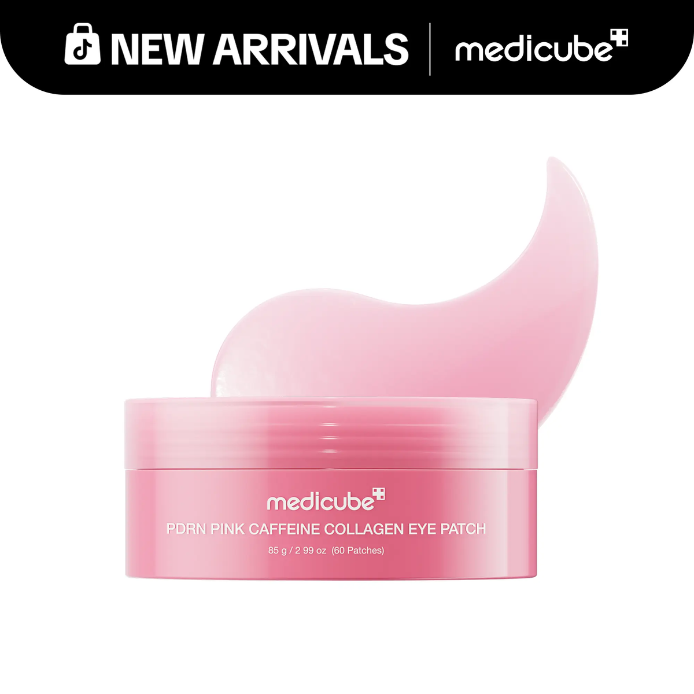

产品图
Medicube PDRN Pink Caffeine Collagen Eye Patch

hero 已切成产品 packshot，避免顶部继续像视频缩略图。

hero 已切成产品 packshot，避免顶部继续像视频缩略图。
前几秒要让人马上看懂 3 件事：眼下哪里有问题、这片怎么贴、它为什么不像普通眼贴。这样观众才会觉得这不是随手保养，而是一个更对的办法。
这是带 PDRN、collagen、caffeine 的 hydrogel eye patch，专门贴眼下。成分会让它更像一个正经眼周护理，但真正让人下单的，还是它很润、贴上去不乱滑、早上很容易塞进 depuff routine，而且 60 片也更显得划算。
会买的人，通常已经知道自己眼下有问题，正在找一个更快、更省事、看起来更靠谱的办法。
先说眼下哪里不对，再马上把眼贴贴上去。人一下就会觉得：这不是普通保湿贴片，是专门来救眼下的。
Why is it anyone wearing these have eye bags or textures around their eye area?
用怪贴法和 before 图，把问题一下说实。
I don't have to cut these in half anymore and put them under my eyes.
先说旧办法麻烦，再让专门的眼贴显得更对。
Have you ever seen eye patches that are this juicy?
保留问题切入，但把很润这件事拍成主卖点。
这类视频不用先教人 Medicube 是谁。它在卖的是：Medicube 终于出了这个，而且看起来很新、很润、很像一个值得马上试的新品。
Medicube finally gave us under eye patches...
先给很润的质地和声音，再讲新品。
Add to cart. You're gonna wanna add to cart before they sell out.
把新品和快没货连到一起，走最短成交路线。
Medicube finally dropped their PDRN eye patches that everyone's been waiting for.
保留 finally dropped，但更早带出清凉感和一起买的机会。
这类视频不是只说它好，而是直接教人怎么贴。位置和顺序越清楚，人越会觉得：这不是随便一片眼贴，而是一个更对的做法。
If you aren't pairing your eye masks with your eye cream, you're doing yourself a disservice.
把一起用讲成更对的做法，不是硬加购。
Really not feeling like going in and having it cut out quite yet.
把 hooded eye 这个问题拍得很具体，位置感最强。
Look at all that serum goodness.
除了眼下，还把法令纹也拉进来。
人会停下，不只是因为这句问话，而是因为她先让你觉得这个贴法很不一样，再让你觉得她说的就是你的问题。
最值钱的不是贴眉毛本身，而是它让这片眼贴一下子从“普通保湿贴片”变成“像是专门治这个的东西”。
眼下浮肿、暗沉、纹理明显，已经在找更靠谱做法的人。
别删怪贴法、before 图和“这片是真的在管眼下”这层感觉。
| 时间 | 这一段发生了什么 | 这一段为什么能卖 |
|---|---|---|
|
先用怪贴法把人停住
动作 / 视觉 把粉色眼贴贴到眉上和眼下。 屏幕文字 I was influenced, & they work 👁️ 原句口播 Why is it anyone wearing these have eye bags or textures around their eye area? 声音 口播 |
这段不是只在问问题，它先用怪贴法把眼贴拍得很不一样。
人先觉得这不是普通眼贴，才会继续听她到底在说什么问题。
|
|
|
before 图把问题拍实
动作 / 视觉 画面插入一张 before 图，能看到疲态和纹理。 屏幕文字 I was influenced, & they work 👁️ 原句口播 These are what my eyes look like in the morning about 6 months ago. 声音 口播 |
before 图把这件事从“听起来像有用”变成“看起来像真的在管这个问题”。
没有这张图，观众知道她在卖眼贴，但不知道她到底在救什么。
|
|
|
边说成分，边拍质地
动作 / 视觉 拍罐子和里面很润的眼贴质地。 屏幕文字 medicube PDRN PINK CAFFEINE COLLAGEN EYE PATCH 原句口播 These Korean skincare eye patches by medicube are packed full of PDRN, collagen and caffeine. It's gonna be great for brightening, tightening and depuffing. 声音 口播 |
这里不是在上成分课，而是在让这片眼贴看起来更像一个正经护理产品。
她一边说成分，一边让人看到很润的质地，所以这东西会显得更认真、更像真的有效。
|
|
|
用量和结果一起收尾
动作 / 视觉 拿起眼贴，拍罐子里的量，再拍贴完后的眼下。 屏幕文字 — 原句口播 You get 60 in a pack... if you've been on the hunt for ones that actually work, I'll have these ones down below for you. 声音 口播 |
最后不是空喊下单，而是把“值得买”说完整。
60 片让人觉得更划算，“真的有用”让人觉得终于找到对的那种了。
|
人停下，不是因为 finally 这句话本身，而是因为一开头就看见它很润、很新，看起来不像普通新品开箱。
这条最值钱的地方，是它不只在说“Medicube 出新品了”，而是在说“Medicube 出了一个看起来就很好的新品”。
已经认识 Medicube，也愿意为熟龄眼周护理花钱的人。
别删很润的罐子镜头、湿润声音和 finally 这层“终于等到”的感觉。
| 时间 | 这一段发生了什么 | 这一段为什么能卖 |
|---|---|---|
|
一开头就要近、润、好看
动作 / 视觉 近拍粉色眼贴倒回罐子里。 屏幕文字 NEW Medicube PDRN Pink Caffeine Collagen Eye Patches 原句口播 Medicube finally gave us under eye patches, and these are soaked with PDRN and caffeine. 声音 湿润的挤压声 |
新品要站住，先得让人看见它不是随便出的东西。
如果只有 finally，没有这层质地，观众会知道它是新的，但不会特别想买。
|
|
|
把它放进日常熟龄护理里
动作 / 视觉 用小勺把眼贴贴到眼下和法令纹位置。 屏幕文字 The first signs of aging... 原句口播 Our skin is the first place to show signs of aging. 声音 口播 |
这里不是教程，它是在给这片眼贴一个更像“正经护理”的位置。
她把它放进日常抗老，不是只讲放松享受，所以新品会显得更有分量。
|
|
|
成分不是主角，只是让它更认真
动作 / 视觉 继续贴眼贴，屏幕上同时出现成分列表。 屏幕文字 Ingredient list 原句口播 The skincare that you use on a daily basis has a bigger impact than you think. 声音 口播 |
成分在这里不是主角，而是在帮这片眼贴看起来更靠谱。
观众未必会记住每个词，但会觉得这不是随便做做的新品。
|
|
|
最后靠品牌信任收
动作 / 视觉 拿着罐子，对着镜头拍清标签。 屏幕文字 — 原句口播 There's a reason why even the ladies in their 50s swear by medicube... I'm gonna drop the link for you right on this video. 声音 口播 |
最后靠信任收，不靠硬催单。
这类品牌型视频，真正让人点进去的，往往不是催得多凶，而是觉得这个牌子做这个应该不会差。
|
这条能停人，是因为它不是只说你做错了，而是马上把更对的做法演出来，让人有一种“我现在就能学会”的感觉。
它不是在硬卖套组，而是在把两样东西拍成一个更对的做法，所以观众更不容易反感加购。
已经有护肤习惯，愿意为了更对的做法多买一步的人。
别删你做错了、先上眼霜、不会滑和最后结果，这几步一起才像一个完整做法。
| 时间 | 这一段发生了什么 | 这一段为什么能卖 |
|---|---|---|
|
一开头就演更对的做法
动作 / 视觉 把眼贴直接贴在粉色眼霜上面。 屏幕文字 You're probably doing this wrong with your eye masks 原句口播 If you aren't pairing your eye masks with your eye cream, you're doing yourself a disservice. 声音 Direct spoken voiceover |
这段好，不只是因为它说你做错了，而是因为它立刻给了一个更好的答案。
观众不会只觉得被说教，还会觉得自己马上学到了一招。
|
|
|
先讲做法，再讲套组
动作 / 视觉 先拿起产品，再把厚厚的眼霜涂到眼下。 屏幕文字 — 原句口播 Medicube just launched these... It pairs perfectly with the PDRN Peptide Eye Cream. We're gonna apply that first. 声音 口播 |
这里最重要的是顺序。
先讲做法，再讲一起用，观众会觉得这是在教方法，不是在硬卖两样东西。
|
|
|
把最真实的担心拆掉
动作 / 视觉 把眼贴贴到眼霜上，再把它按平。 屏幕文字 — 原句口播 These ones are not gonna slide down your face. We're gonna seal that eye cream in... 声音 口播 |
这一步在处理最真实的问题：会不会滑，怎么搭。
她不是空讲吸收，而是把最容易让人犹豫的地方直接拍掉。
|
|
|
先给结果，再说 39 岁
动作 / 视觉 揭下眼贴，拍贴完后的眼下状态。 屏幕文字 — 原句口播 It's been about 20 minutes... as soon as I turned 39, the crows feet started crows feeding. 声音 口播 |
这段让前面的做法看起来更可信。
先有结果，再说 39 岁，观众会更容易相信这不是年轻皮的假象。
|
人会停下，是因为这句“我还不想去割”一下把问题说重了，让这条视频看起来不是在讲小保养，而是在讲一个真的烦恼。
这条最值钱的地方，是把眼贴拍成一个很具体的贴法，所以它看起来像个小技巧，不像普通抗老品。
在意 hooded eye、上眼皮松、妆前提拉的人。
别删 hooded eye 这个问题、上下都贴和 10 分钟这层做法，不然这条就会变普通。
| 时间 | 这一段发生了什么 | 这一段为什么能卖 |
|---|---|---|
|
先把问题说重
动作 / 视觉 用手把上眼皮往上提，给人看她在烦什么。 屏幕文字 My hooded eye trick... 原句口播 Really not feeling like going in and having it cut out quite yet. 声音 口播 |
这条开头先把问题说重了。
她不是先说好处，而是先让人感觉到这个问题有多烦。
|
|
|
最值钱的是这个贴法
动作 / 视觉 把粉色眼贴贴到上眼皮和下眼皮。 屏幕文字 My hooded eye trick... 原句口播 I do this before I put my makeup on. I take a eye patch that has caffeine in it. Put one on the top, I put one on the bottom. 声音 口播 |
最值钱的不是 caffeine 这个词，是上下都贴这个动作。
这一步会让人觉得：原来它还能这么用，它不是只给眼下用的普通眼贴。
|
|
|
新品是为了这个做法服务
动作 / 视觉 近拍罐子，再边按眼贴边说早晚怎么用、能不能搭眼霜。 屏幕文字 My hooded eye trick... 原句口播 These are actually brand new from medicube... I use them in the morning and the night. At night, I usually just put them under my eye, and I put my retinol eye cream under it... 声音 轻微拿罐子的声音 |
这里提新品，不是为了热闹。
它是在说：她终于找到一个更适合这个问题的工具，而不是又试一个普通产品。
|
|
|
把结果说成一个清楚的做法
动作 / 视觉 还贴着眼贴时，指着眼周解释这招会带来什么变化。 屏幕文字 My hooded eye trick... 原句口播 Just leave these on for about 10 minutes, and it really tightens up my skin... 声音 口播 |
最后不是讲抽象抗老，而是讲一个很清楚的 10 分钟做法。
她把价值锁在妆前提拉和上眼皮变紧这件事上，所以这招会显得更能马上试。
|
先看共同规律，再看每一类视频最值钱的地方。这里不重写脚本，只决定下一条先改哪一块，哪一块先别动。
第一秒站不住，后面再好也没人看到。
画面、口播、字卡、贴法一起上，人才会真的停住。
最稳的是拍到眼贴、罐子、精华很多、不会滑，因为这些会让人更信。
早上用、贴 10 到 20 分钟、怎么搭着用，这些都会让人更敢下单。
它能卖，是因为人会先觉得“这说的就是我”，再觉得“这片像是真的在管这个问题”。
先看贴法够不够怪，问题够不够具体。
中段最稳的是 before 和结果，因为这会让人更信。
最后用 60 片和“真的有用”收单，因为人会觉得终于找到对的了。
先测开头的问题和贴法，不先改后半段。
它能卖，不只是因为新品来了，而是因为新品一出来就看起来很像好东西。
先看罐子和质地能不能在 5 秒里把人停住。
中段只要补日常抗老和认真感，不用讲太深。
结尾靠信任收，因为这类视频更吃“这个牌子做这个应该不会差”。
先试质地在前，还是 finally 在前。
它走最短路：先把人往购物车推，再让人担心晚了就没了。
先看催单和产品近景是不是一起出现。
中段不用太长，补一个理由就够。
这类视频靠缺货感，不靠长解释。
先测催单强度，再测要不要补一个快用理由。
这条不是在硬卖套组，而是在让人觉得“这样搭着用才更对”。
先看“你做错了”和正确动作有没有一起出现。
中段最稳的是不会滑、怎么搭、先后顺序，因为这些正好在拆犹豫。
结果和年龄代入，比硬 CTA 更重要。
先测开头怎么说，再测不会滑放哪里。
把新品视频和问题视频合在一起：先说 Medicube 终于出了，再马上点眼下问题。
把很润的质地借给方法视频：一开始先拍眼霜或眼贴很润。
同一类问题视频，换第一层证据：一版先上 before 图，一版先上不会滑。
同一个大方向，换人群：一版讲普通眼下问题，一版讲上眼皮和熟龄问题。
先把问题拍具体，再让眼贴看起来像一个更对的办法。
| 步骤 | 这一块负责什么 | 尽量别动的 | 可以换的变量 | 真实句子 / 真实做法 |
|---|---|---|---|---|
| 第 1 步 | 第一秒停住人 | 具体问题 + 明确贴法 | 浮肿、暗沉、纹理、早上肿 | 问题越具体越好 |
| 第 2 步 | 马上拍到产品 | 罐子、眼贴、before 图尽早出现 | before 图先上，还是罐子先上 | 不要让人猜产品长什么样 |
| 第 3 步 | 让人觉得它靠谱 | 成分早点说，但别讲太深 | 先说去肿、变亮，还是先说成分 | 成分只是帮忙，不是主角 |
| 第 4 步 | 把下单理由收顺 | 60 片、划算、真的有用 | 催单强一点还是弱一点 | 最后别收成空话 |
先让人觉得 Medicube 终于补上了这块，再用质地把新品拍得很想试。
| 步骤 | 这一块负责什么 | 尽量别动的 | 可以换的变量 | 真实句子 / 真实做法 |
|---|---|---|---|---|
| 第 1 步 | 先说新品来了 | finally、new、just dropped | 终于出了、赶紧买、大家等很久了 | 品牌这层信任要保留 |
| 第 2 步 | 靠质地停人 | 很润的近景 | 罐子回倒、近拍单片、拉丝感 | 新品要先看起来让人想试 |
| 第 3 步 | 让它看起来更认真 | 熟龄护理、日常护理、清凉感 | 更像熟龄护理，还是更像日常保养 | 不要在这里讲太深 |
| 第 4 步 | 把下单推一把 | 快没货、点链接、先买到再说 | 缺货感强一点还是弱一点 | 如果要更能转，先补怎么用 |
把眼贴从单品变成做法，让人看懂怎么用、为什么这样用。
| 步骤 | 这一块负责什么 | 尽量别动的 | 可以换的变量 | 真实句子 / 真实做法 |
|---|---|---|---|---|
| 第 1 步 | 先说哪里做错了 | 你做错了、hooded eye、旧办法太麻烦 | 开头说重一点还是轻一点 | 先让人觉得现在的方法不够对 |
| 第 2 步 | 把位置演出来 | 眼下、上眼皮、法令纹、先上眼霜 | 贴哪里、先后顺序 | 方法视频不能只有嘴 |
| 第 3 步 | 解决最真实的问题 | 不会滑、贴多久、早上还是晚上 | 清凉、紧一点、早晚顺序 | 评论里的问题要在视频里拆掉 |
| 第 4 步 | 把结果落到日常里 | 妆前、熟龄问题、一直用 | 鱼尾纹、hooded eye、暗沉 | 不要让套组逻辑盖过大盘版本 |
这一块只留真的要用的东西：先写哪种、买前会担心什么、哪些东西不能丢。